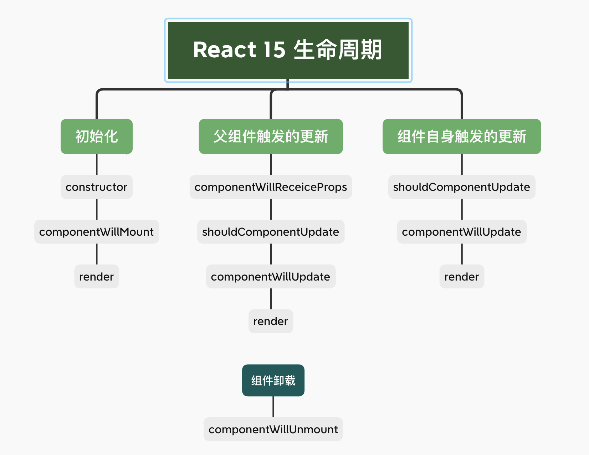
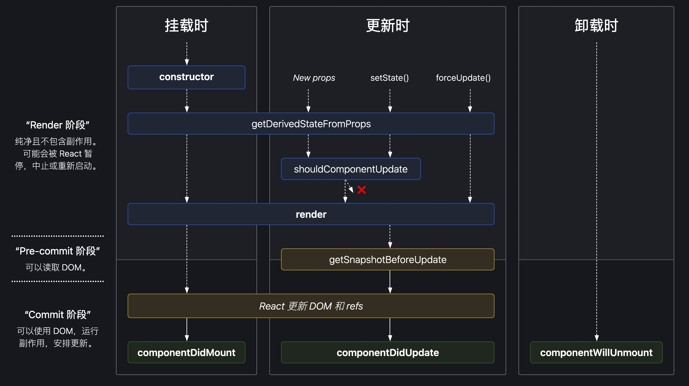
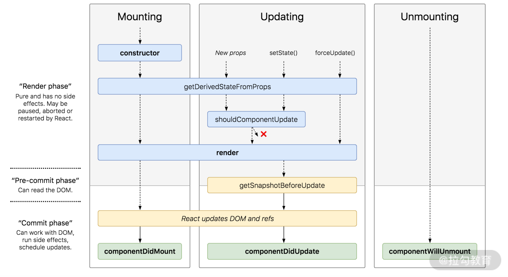

React 生命周期
React 是一个构建用户界面的 JavaScript 库，其核心的 Virtual DOM 是由生命周期的 render 方法生成的。初始化时，render 方法生成 Virtual DOM 交给 ReactDOM.render 方法渲染成真实 DOM；更新时， render 方法生成的新 Virtual DOM 与旧 Virtual DOM 进行比较，针对差异部分 ReactDOM.render 对真实 DOM 进行修改。
React 生命周期中的 render 在其中扮演着 Virtual DOM 生成的关键角色，其他生命周期则像是 render 方法的辅助，做数据的初始化或者修改，辅助 render 方法完成 Virtual DOM 的生成。
React 15 的生命周期
对于 React 15 的生命周期可以从以下几个方面进行理解：
- 组件初始化：在 componentDidMount 做数据请求或者 DOM 操作
- 组件的父组件更新：此时 componentWillReceiveProps 都会执行
- 组件的自身更新
- 组件更新过程中：可以在 shouldComponentUpdate 返回 true/false，控制是否更新组件
- 组件卸载

React 16.4 的生命周期
对于 React 16.4 的生命周期可以从以下几个方面进行理解：
- React 16 新增了 getDerivedStateFromProps 生命周期，可以根据 props 来返回 state，定向更新 state。
- 在 React 16.4 中，任何因素触发的组件更新流程（包括由 this.setState 和 forceUpdate 触发的更新流程）都会触发 getDerivedStateFromProps；而在 16.3 版本时，只有父组件的更新会触发该生命周期。
- getDerivedStateFromProps 是一个静态方法。静态方法不依赖组件实例而存在，因此你在这个方法内部是访问不到 this 的。
- getSnapshotBeforeUpdate 的返回值会作为第三个参数给到 componentDidUpdate。它的执行时机是在 render 方法之后，真实 DOM 更新之前。在这个阶段里，我们可以同时获取到更新前的真实 DOM 和更新前后的 state&props 信息

React 16 改造生命周期的主要动机是为了配合 Fiber 架构带来的异步渲染机制
- 为同步渲染改异步渲染的 Fiber 铺路，把 有可能多次执行的 render 阶段中 componentWillMount/componentWillUpdate/componentWillRecevieProps 三个方法弃用；
- 为在一定程度上防止用户对生命周期的错用和滥用，把新增的 getDerivedStateFromProps 用 static 修饰，阻止用户在其内部使用 this 。
